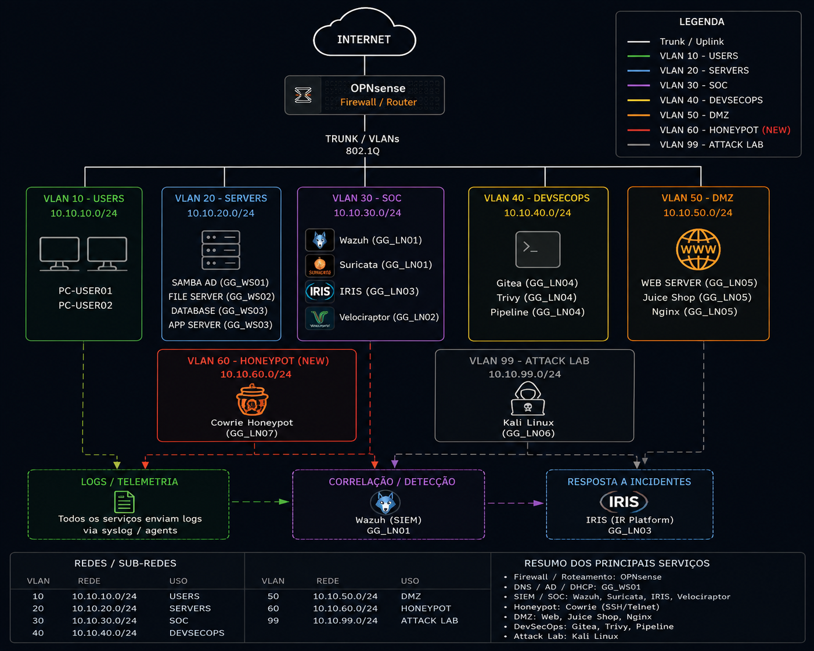

ATTACK.
DETECT. RESPOND.
Uma experiência interativa mostrando a construção do GG CyberLab e o ciclo completo de um evento de segurança, desde a infraestrutura até a investigação forense.
GG CyberLab
Laboratório autoral desenvolvido por Geovanni Andrade com foco em Blue Team, SOC, DFIR, Incident Response, Network Security, Active Directory e DevSecOps.
O projeto reproduz uma infraestrutura corporativa segmentada e permite acompanhar um evento de segurança desde sua geração até sua detecção, documentação, resposta e investigação.
Prevent → Detect → Respond → Investigate
GitHub ↗
CyberLab Journey
A apresentação roda continuamente em loop. Quando a atividade ofensiva começa, a interface muda para vermelho. Durante detecção, resposta e DFIR, o ambiente muda para azul.
Incident Story
Fluxo validado no laboratório, da atividade ofensiva à investigação forense.
Build Your Defense
O ambiente começa com um serviço exposto e um caminho direto de ataque. Adicione controles e veja a arquitetura se transformar em um ambiente segmentado, monitorado e preparado para resposta a incidentes. Passe o mouse ou toque nos ativos para visualizar informações técnicas resumidas.
Risco inicial: acesso direto ao serviço publicado.
Funções: VLANs, regras de firewall, roteamento e segmentação.
Nginx: 80/tcp
Juice Shop: 127.0.0.1:3000
Cowrie: 22 → 2222
VLAN 30 — SOC
Funções: monitoramento, correlação, Threat Hunting e regras customizadas.
IP: 10.10.50.10
Porta externa: 22/tcp
Container: 2222/tcp
IP: 10.10.30.30
HTTPS do laboratório: 8444 → 443
Case Management, IOC, Assets, Evidence e Timeline.
IP: 10.10.30.20
GUI via tunnel: 8889
Coleta de artefatos e investigação DFIR.
IP observado: 10.10.99.161
Utilizado exclusivamente para testes controlados contra o CyberLab.